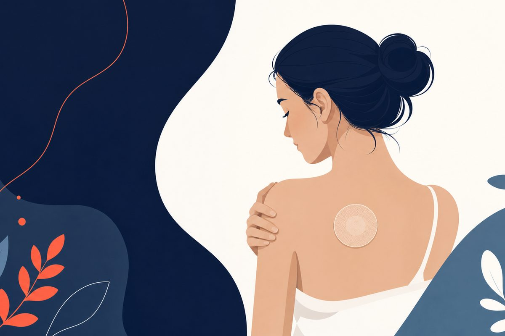

Key Takeaways
- Tinea versicolor is caused by Malassezia yeast, part of normal skin flora, which causes the rash only in its filamentous form.[1] It is not a dermatophyte infection,[2] and it is not considered contagious.[3]
- The characteristic sign: lighter or darker scaly patches, mainly on the trunk, neck, and upper arms, that become more noticeable when you have a tan.[1][4]
- KOH microscopy (the "spaghetti and meatballs" pattern) confirms the diagnosis.[5] A Wood lamp can help, but in one report only about one third of lesions showed fluorescence.[1]
- First-line treatment is topical, such as selenium sulfide 2.5% lotion or ketoconazole 2% shampoo.[1][6][7] For extensive or hard-to-treat disease, regimens supported by a systematic review are oral fluconazole 300 mg once weekly for 2 weeks or itraconazole 200 mg daily for 5 or 7 days.[8]
- Skin color can stay lighter or darker for weeks or months after the yeast is gone. That alone does not mean the treatment failed.[9][5]
- Recurrence is common, reaching as much as 60% in 1 year and 80% in 2 years.[10] Preventive treatment should be considered for people who keep relapsing.[1]

One of the most common questions I hear from patients with tinea versicolor is: "I finished the treatment, so why do I still have these spots?" It's a fair question, and the answer tells you a lot about what this condition actually is. The yeast is easy to kill, but the skin can stay lighter or darker for weeks or months before its normal color returns.[9] That recovery takes weeks to months, not days.
Tinea versicolor affects up to 50% of people in tropical regions, compared with an estimated 1% to 4% in moderate climates.[1] It is one of the most common skin conditions seen in practice, and it can be mistaken for other conditions such as vitiligo or eczema; misdiagnosis can lead to treatments that do not work.[11] Getting the diagnosis right changes everything about how you manage it.
This guide covers everything you need to know: the biology of the yeast, how we make the diagnosis, every treatment option with clinical data, and why this condition has such a stubborn tendency to return.
What Is Tinea Versicolor, and What Is It Not?
Despite the word "tinea" in the name, tinea versicolor is not caused by a dermatophyte, the class of fungi responsible for athlete's foot, ringworm, and nail fungus.[2] The name is historical and misleading. The actual causative organism is Malassezia, a lipid-dependent yeast that is a normal part of the healthy skin microbiome. It causes tinea versicolor only when it shifts into its pathogenic filamentous (hyphal) form.[1]
This distinction matters clinically. Oral terbinafine (Lamisil), which works well for ringworm, is not effective for tinea versicolor.[11] Patients sometimes tell me they tried an antifungal that "didn't work" when in fact they were given the wrong medication for this condition.
The Causative Yeast: Malassezia
The genus Malassezia currently includes 19 species.[1] The species most frequently isolated in tinea versicolor are M. globosa, M. sympodialis, and M. furfur.[3] These yeasts depend on skin lipids, which is why they live in sebum-rich areas such as the chest, upper back, face, and scalp.[1] Increased sebum production also explains why tinea versicolor most often develops in adolescents and young adults.[1]
What drives the shift to the pathogenic form is not fully understood, but reported predisposing factors include a hot and humid environment, heavy sweating, oily emollients, oily skin (seborrhea), pregnancy, oral contraceptives, corticosteroids, malnutrition, poor general health, and genetic predisposition.[1] Immunosuppression is also listed as a predisposing factor.[3] In its pathogenic form the organism interacts with melanocytes, the pigment cells, and that is what produces the discolored patches.[1]
Why the Skin Changes Color
The color change in tinea versicolor has two distinct mechanisms, depending on whether you develop light or dark patches.
Hypopigmentation (lighter patches) develops when azelaic acid produced by Malassezia inhibits tyrosinase, the enzyme melanocytes use to make melanin.[1] Lipid-like material that builds up in the outer skin layer may also act as a physical sunscreen and add to the lightening. One compound once suspected of this effect, pityriacitrin, turned out to have very weak sun-protective properties.[1] Lighter patches tend to be more visible in darker skin,[1] and a tan makes tinea versicolor easier to see.[12]
Hyperpigmentation (darker patches) is less well understood. It is thought to possibly involve stimulation of melanocytes by the inflammation the yeast causes.[13] Darker patches are more common in lighter skin tones.[1]
Patients often assume that if their spots haven't faded, their treatment didn't work. That's usually not the case. With treatment the yeast is easy to kill, but the skin may stay lighter or darker for weeks or months, and it will eventually return to its normal color.[9] Lingering color does not necessarily mean the treatment failed. The fine surface scale is the better guide: it indicates active infection, and once it has disappeared the infection is no longer ongoing.[5] To help even out skin tone, the American Academy of Dermatology advises protecting your skin from the sun and not tanning.[9] If the scale or new patches come back, have the skin checked again.
Recognizing the Condition: Symptoms and Appearance
Tinea versicolor has a characteristic appearance that most physicians recognize quickly. The problem is that patients often live with it for months or years before seeking care, sometimes because the patches are mistaken for a tan or sun damage.
Classic Presentation
- Location: Mainly the back and shoulders, neck, and chest, and less often the abdomen, upper arms, and thighs.[1] Facial involvement is uncommon and has been reported particularly in children.[1]
- Color: Patches are either lighter (hypopigmented) or darker (hyperpigmented) than the surrounding skin. In lighter-skinned individuals, patches may appear pink or salmon-colored.
- Scale: A fine, powdery scale overlies the patches. You may not see it at first glance, but if you gently scratch or rub the surface, a white powdery scale is easily produced. This "evoked scale sign" is a useful bedside diagnostic clue.[13]
- Borders: Patches have fairly well-defined but not sharp edges. Individual macules may merge into irregular larger patches over time.
- Itching: Often absent. Some patients notice mild itching that gets worse with warmth and humidity, for example after sweating.[1]
- Seasonal variation: The spots can disappear when the temperature drops and return in spring or summer, and they become more noticeable when you have a tan.[4]
Clinical Forms
Classical form: Lighter or darker round macules covered with delicate scale on the back, shoulders, neck, and chest, which may merge into larger patches.[1]
Facial form: Facial involvement is uncommon and has been reported particularly in children.[1]
Follicular form: Folliculocentric tinea versicolor mainly affects the chest and back. It produces lighter or darker spots located around hair follicles that may merge into larger patches.[1] Other less common variants, including inverse, atrophying, papular, and confetti-like forms, have also been described.[1]
How We Diagnose It: Wood Lamp and KOH Prep
The diagnosis is usually made from the clinical appearance alone.[1] When the presentation is atypical, quick tests such as a skin scraping examined under the microscope or a Wood lamp examination can help.[9]
KOH Preparation (Gold Standard)
A skin scraping from an affected patch is placed on a glass slide with a drop of potassium hydroxide (KOH) solution. The KOH dissolves the skin cells, leaving the fungal elements visible under the microscope. The classic finding is often described as "spaghetti and meatballs": hyphae (the spaghetti) mixed with round yeast cells (the meatballs).[5]
KOH itself does not stain the fungus, so methylene green, periodic acid-Schiff, or simply common blue ink can be added for better visualization.[1] The fungi are most concentrated at the edge of a patch, so the sample is best taken from the periphery, and darker lesions tend to contain more hyphae and spores than lighter ones.[1] KOH microscopy is not 100% sensitive.[1]
Wood Lamp Examination
A Wood lamp emits ultraviolet light with a peak wavelength of 365 nm.[1] In tinea versicolor the affected skin may appear yellowish green under the lamp,[9] which is attributed to the organism's production of pityrialactone, a tryptophan derivative.[13]
One important limitation: in one report only about one third of tinea versicolor lesions showed fluorescence, and showering or bathing before the visit may wash away the substances that glow.[1] A negative Wood lamp result does not rule out tinea versicolor. It is most useful as a rapid screening tool in the right clinical context: a positive result supports the diagnosis, while a negative result may still call for a KOH prep. Erythrasma (a bacterial skin infection) produces a distinctive coral-red fluorescence under the Wood lamp, which helps distinguish it from tinea versicolor.
Culture is not recommended for tinea versicolor. Malassezia needs special culture media enriched with olive oil and 1 to 4 weeks of incubation.[1] KOH prep is faster and clinically sufficient.
Differential Diagnosis: Conditions That Look Similar
Getting the right diagnosis before starting treatment matters. Several conditions produce hypo- or hyperpigmented patches that can be confused with tinea versicolor.
| Condition | Key Features | How to Distinguish |
|---|---|---|
| Vitiligo | Smooth, chalk-white patches with sharp, well-defined edges. Autoimmune destruction of melanocytes. Patches expand progressively. | No scale. Does not fluoresce with Wood lamp. KOH prep negative. Does not respond to antifungals. Under Wood lamp, vitiligo patches appear bright white (not yellow-green). |
| Pityriasis alba | Faint, dry, hypopigmented patches mainly on the face and upper arms in children and young adults. Associated with atopic dermatitis. | No scale on active lesions. Often on the face. Not associated with oily areas. Wood lamp and KOH negative. |
| Post-inflammatory hypopigmentation | Light patches in areas of prior skin trauma, inflammation, or injury. Can follow eczema, psoriasis, or acne. | History of prior skin condition or injury. No scale. Wood lamp and KOH negative. Resolves slowly on its own. |
| Pityriasis rosea | Oval, salmon-colored patches with a "collarette" of inner scale. Typically begins with a single "herald patch." Follows a Christmas tree distribution on the trunk. | Herald patch. Collarette of scale (inside the lesion border, not on top). Typically self-resolves in 6–10 weeks. KOH negative. |
| Seborrheic dermatitis | Greasy yellow-white scale on oily areas such as the scalp, face, ears, and central chest. Associated with overgrowth of the same Malassezia yeast, in a different clinical pattern.[5] | Greasy rather than dry scale. Scalp and face involvement. Topical ketoconazole is effective for it too,[14] but it is a distinct clinical entity. |
| Erythrasma | Reddish-brown patches in body folds (groin, axillae). Bacterial, caused by Corynebacterium minutissimum. | Coral-red fluorescence under Wood lamp (not yellow-green). |
In clinical experience, vitiligo is the most clinically significant mimic. A patient incorrectly told they have vitiligo will undergo unnecessary immunologic workup and receive treatments that cannot help. A patient with vitiligo incorrectly treated as tinea versicolor will experience repeated treatment failures and months of delay. The fine powdery scale is the most reliable bedside distinguishing feature when the clinical picture is ambiguous.
Treatment: Topical and Oral Antifungal Options
Topical therapy is the treatment of choice. Oral medications are a second-line treatment for extensive, severe, unresponsive, or recurrent disease.[1]
Topical Treatment (First-Line)
| Agent | Regimen | Efficacy | Notes |
|---|---|---|---|
| Selenium sulfide 2.5% lotion | Apply to affected areas and lather with a little water, leave on for 10 minutes, then rinse; once a day for 7 days (US label).[6] Reviews also describe 2-week courses.[1] | Shown effective as a non-specific treatment[11] | Prescription only at 2.5%. Keep out of the eyes and off the genital area and broken or inflamed skin.[6] |
| Ketoconazole 2% shampoo (used as body wash) | Apply to damp skin over and around the affected area, lather, leave on for 5 minutes, then rinse. One application should be sufficient (US label).[7] | Mycological clearing in 84% with 3 daily applications and 78% with a single application in the label's trial[7] | Ketoconazole 2% cream is an alternative: once daily, and tinea versicolor usually needs two weeks.[15] |
| Terbinafine 1% solution (topical) | Twice daily for 1 week[16] | 81% negative mycology 8 weeks after starting, vs 41% with placebo[16] | Topical terbinafine can be effective; oral terbinafine is not, a critical distinction.[11] The OTC terbinafine cream label lists athlete's foot, jock itch, and ringworm, not tinea versicolor.[17] |
| Ciclopirox olamine cream | Massage into the affected and surrounding skin twice daily; clearing usually takes about 2 weeks (US label).[18] | 77% clinical and mycological cure after 2 weeks of 1% cream, vs 45% with clotrimazole[19] | Prescription only; the US product is 0.77%.[18] |
| Zinc pyrithione shampoo or wash | No standard regimen; follow the product or clinician directions | Shown effective as a non-specific treatment[11] | A common active ingredient in medicated washes.[9] Whole-body antifungal washes might limit recurrence, though this is still poorly supported by studies.[1] |
Selenium sulfide and ketoconazole are two of the best-studied topical options, and ketoconazole shampoo was as effective as 2.5% selenium sulfide in a comparison trial.[11] Contact time matters: the US labels call for leaving selenium sulfide on for 10 minutes and ketoconazole shampoo for 5 minutes before rinsing.[6][7] Because the scalp is a major reservoir of the yeast, topical treatment should also cover the scalp.[1]
Oral Treatment (For Extensive or Recalcitrant Disease)
A dermatologist may prescribe antifungal pills if tinea versicolor covers a large area of the body, is thick, or often returns after it is treated.[9] No oral dosing regimen has been approved for this indication, so the regimens below come from a systematic review of clinical trials.[8]
| Agent | Regimen | Efficacy | Notes |
|---|---|---|---|
| Fluconazole | 300 mg orally once weekly for 2 weeks[8] | Regimen supported by a systematic review of 57 trials[8] | A medical panel recommends fluconazole over itraconazole, if possible, because of drug interactions.[11] Tinea versicolor is not a labeled use. Fluconazole is a moderate CYP2C9 and CYP3A4 inhibitor, and some azoles, including fluconazole, have been associated with QT prolongation.[20] |
| Itraconazole | 200 mg daily for 5 or 7 days[8] | 92% mycological cure after 200 mg daily for 7 days in the open phase of a large trial[10] | Boxed warning on congestive heart failure, cardiac effects, and drug interactions; some drug combinations are contraindicated. Rare serious liver toxicity, including liver failure and death, has been reported. Take capsules with a full meal.[21] |
Oral ketoconazole was once a standard systemic option for tinea versicolor. In 2013 the FDA limited its use, stating that "Nizoral tablets are not indicated for the treatment of fungal infections of the skin or nails" and that "Nizoral oral tablets should not be a first-line treatment for any fungal infection."[22] The FDA warned that the tablets can cause liver injury that may result in liver transplantation or death, can cause adrenal insufficiency, and can interact with other drugs with potentially life-threatening outcomes.[22] Itraconazole and fluconazole are the preferred oral options.[1] Topical ketoconazole (shampoo or cream) is generally considered effective and safe; this concern applies specifically to the oral form.[14]
Recurrence: Why It Keeps Coming Back
Tinea versicolor recurs at rates that frustrate both patients and physicians: recurrence can reach as much as 60% in 1 year and 80% in 2 years.[10] Recurrence rates remain high even after successful treatment.[23] This reflects a basic biological reality: Malassezia is part of the normal skin flora, which makes the condition particularly difficult to eradicate.[11] You can suppress the overgrowth, but you cannot remove the yeast for good.
Recurrence is driven by the same conditions that triggered the first episode, especially warm, humid weather. Some people who live in a tropical climate may need to use a medicated cleanser year round, and people who live where it turns warm and moist each spring may see tinea versicolor return every year.[9]
Maintenance Prophylaxis
For people with recurrent disease, prolonged prophylaxis with topical agents should be considered, especially during warmer and more humid months.[1] The goal is to keep the yeast suppressed before the patches return. Research on prophylaxis is limited, but evidence suggests that monthly itraconazole and selenium sulfide may reduce relapse.[11]
| Prophylaxis Option | Regimen | Evidence |
|---|---|---|
| Selenium sulfide (topical) | Once the rash has cleared, reapply monthly[5] | May reduce relapse; limited research[11] |
| Medicated cleanser (selenium sulfide, ketoconazole, or pyrithione zinc) | Once or twice a month, especially during warm and humid periods[9] | Advised by the American Academy of Dermatology to prevent regrowth;[9] whole-body antifungal washes are still poorly supported by studies[1] |
| Itraconazole (oral) | 200 mg twice daily on 1 day per month for 6 months[10] | In a randomized, placebo-controlled trial, 88% on itraconazole vs. 57% on placebo remained mycologically cured at 6 months[10] |
Topical prophylaxis is a common starting point, because topical agents have a better safety profile, fewer drug interactions, and lower costs than oral treatment.[1] Oral prophylaxis with itraconazole or fluconazole remains a practical alternative, especially if topical agents fail.[1] Itraconazole carries a boxed warning about heart failure and drug interactions, so your clinician should review your other medicines first.[21]
Lifestyle factors also matter. The American Academy of Dermatology advises stopping oily skin-care products in favor of oil-free (non-comedogenic) ones and wearing loose clothes.[12] Washing and ironing clothes may also help, because clothing can act as a reservoir for the yeast.[1] These are not dramatic interventions, but over a summer they can meaningfully reduce the likelihood of a flare.
Who Gets It and Why: Climate, Oily Skin, and Immune Status
Tinea versicolor is fundamentally an environmental disease. The yeast lives on nearly everyone's skin; the question is what conditions allow it to overgrow.
Climate and Humidity
Prevalence reaches up to 50% in tropical regions, compared with an estimated 1% to 4% in moderate climates and 1% in cold climates.[1] A hot and humid environment favors the conversion of the yeast to its filamentous form.[1] Many people notice a seasonal pattern: the spots fade when the temperature drops and return in spring or summer.[4]
Skin Characteristics
Oily skin (seborrhea) is a recognized predisposing factor.[1] Malassezia depends on sebum lipids, and increased sebum production is why tinea versicolor most often develops in adolescents and young adults.[1] In the United States it is most common in people aged 15 to 24 years, and cases before puberty or after age 65 are uncommon.[3]
Immune Factors
A higher incidence has been noted in immunocompromised people and in people with diabetes or obesity.[1] In people with a predisposition, tinea versicolor may recur chronically, and prophylactic treatment may be required to prevent recurrence.[3] Pregnancy, oral contraceptives, and corticosteroid use are also listed as predisposing factors.[1]
Genetic Predisposition
More than 20% of people with tinea versicolor report a family history of the condition.[3] Lymphocyte function on stimulation with the organism has been shown to be impaired in affected patients, which suggests that cell-mediated immunity plays some role in the disease.[3]
Evaluating and Treating Tinea Versicolor via Telehealth
Tinea versicolor is one of the skin conditions best suited to telehealth evaluation. The visual pattern, with scaly hypo- or hyperpigmented patches clustered on the trunk and upper arms, is clinically distinctive, and a physician experienced with dermatologic presentations can evaluate it confidently from clear photographs.
A telehealth visit for suspected tinea versicolor typically involves reviewing your symptom history (duration, location, seasonal pattern, prior treatment), assessing photographs of the affected skin, and considering the differential diagnosis based on your presentation. If the clinical picture is clear, prescription antifungal therapy can be provided without an in-person visit. If the diagnosis is uncertain, for example if there is a question of vitiligo or another pigmentary disorder, you may be directed to an in-person visit for a KOH prep or Wood lamp examination.
Telehealth is also particularly useful for patients who have already been diagnosed and need prescription-strength treatment or maintenance prophylaxis renewed. If you've had this before and you recognize the pattern, a video or photo visit can get you the medication you need without unnecessary delay.
For questions about tinea versicolor or to request an evaluation, reach our team at (678) 956-1855 or contact@teledirectmd.com.
Frequently Asked Questions
For most people with limited disease, a topical treatment such as selenium sulfide 2.5% lotion or ketoconazole 2% shampoo works well.[1] The US labels direct leaving selenium sulfide on for 10 minutes once a day for 7 days, and leaving ketoconazole shampoo on for 5 minutes, with one application usually sufficient.[6][7] For extensive disease or treatment failures, regimens supported by a systematic review are oral fluconazole 300 mg once weekly for 2 weeks or itraconazole 200 mg daily for 5 or 7 days.[8]
No. Tinea versicolor is not considered contagious, because the yeast that causes it, Malassezia, is a normal inhabitant of the skin.[3] The rash develops when that yeast overgrows, helped by factors like heat, humidity, oily skin, or a weakened immune system.[1] It is not considered infectious in the conventional sense.[5]
This is one of the most common concerns patients bring to me. Antifungal treatment kills the yeast, but the color change takes longer to fade: the skin may stay lighter or darker for weeks or months, and it will eventually return to its normal color.[9] Lingering color does not necessarily mean treatment failed; the fine surface scale is the sign of active infection.[5] Protecting your skin from the sun and not tanning helps even out your skin tone.[9] If the scale or new patches come back, it is worth having the skin checked again.
Often, yes. Recurrence can reach as much as 60% in 1 year and 80% in 2 years.[10] This is because Malassezia remains on the skin as normal flora, which makes the condition difficult to eradicate.[11] For people who relapse, prolonged topical prophylaxis should be considered, especially in warmer, more humid months,[1] and evidence suggests that monthly itraconazole and selenium sulfide may reduce relapse.[11]
They can look similar, since both cause lighter patches on the skin. The key differences: tinea versicolor patches have fine scale when gently scratched, may fluoresce yellow-green under a Wood lamp, and respond to antifungal treatment. Vitiligo patches are smooth, have sharply defined chalk-white edges, are caused by autoimmune destruction of melanocytes, and do not respond to antifungal therapy. A KOH scraping confirming yeast confirms tinea versicolor. Getting this distinction right matters because the treatments are completely different.
Both. Malassezia is a dimorphic yeast-like fungus: it can exist as a yeast or in a filamentous (hyphal) form, and it causes tinea versicolor only in the filamentous form.[1] Despite the name "tinea," it is not caused by dermatophytes, the fungi behind athlete's foot and ringworm.[2] This distinction matters because oral terbinafine, which works well for dermatophytes, is not effective for tinea versicolor.[11]
Yes. Tinea versicolor is well-suited to telehealth evaluation. The clinical presentation (scaly hypo- or hyperpigmented patches on the trunk and upper arms) is recognizable from good photographs. A physician can assess the distribution, appearance, and your history to confirm the diagnosis and prescribe the appropriate antifungal medication without an in-person visit. For uncertain presentations, or when another condition like vitiligo needs to be excluded, an in-person visit with KOH prep provides definitive confirmation. Contact TeleDirectMD at (678) 956-1855 or contact@teledirectmd.com.
The most consistent triggers are heat, high humidity, and excessive sweating, which is why the condition is much more common in tropical climates and tends to flare in summer. Other factors include oily skin, use of oily skincare products or sunscreens, immunosuppression (including corticosteroid use), pregnancy, malnutrition, and genetic predisposition. Reducing sweating and using non-comedogenic skincare products during warm months can lower recurrence risk.
Seek evaluation if you notice new scaly patches that are lighter or darker than your surrounding skin, especially on your chest, back, shoulders, or upper arms. See a physician if patches are spreading, if over-the-counter antifungal treatments have not worked after 4 weeks,[18] if discoloration persists more than 6 months after treatment, or if you are unsure whether your diagnosis is correct. The condition is easy to treat once confirmed, but misdiagnosis is common and delays appropriate care.
References
- Łabędź N, Navarrete-Dechent C, Kubisiak-Rzepczyk H, Bowszyc-Dmochowska M, Pogorzelska-Antkowiak A, Pietkiewicz P. "Pityriasis Versicolor: A Narrative Review on the Diagnosis and Management." Life (Basel). 2023;13(10):2097. doi:10.3390/life13102097. https://pmc.ncbi.nlm.nih.gov/articles/PMC10608716/
- Ely JW, Rosenfeld S, Seabury Stone M. "Diagnosis and management of tinea infections." American Family Physician. 2014;90(10):702-710. PMID 25403034. https://www.aafp.org/afp/2014/1115/p702
- Sayed C. "Tinea Versicolor." Medscape (Chief Editor: Elston DM). Updated August 22, 2023. Accessed November 15, 2026. https://emedicine.medscape.com/article/1091575-overview
- American Academy of Dermatology. "Tinea versicolor: Signs and symptoms." No page date shown. Accessed November 15, 2026. https://www.aad.org/public/diseases/a-z/tinea-versicolor-symptoms
- Oakley A. "Pityriasis versicolor." DermNet. Updated September 2014; page last modified August 25, 2024. Accessed November 15, 2026. https://dermnetnz.org/topics/pityriasis-versicolor
- Selenium sulfide topical suspension USP, 2.5% (lotion), Rx only. Padagis. Prescribing information. DailyMed, National Library of Medicine. Updated May 31, 2025. Accessed November 15, 2026. https://dailymed.nlm.nih.gov/dailymed/lookup.cfm?setid=28b84e3c-ae44-40bb-93c4-2625e19f7e61
- Ketoconazole shampoo, 2%, Rx only. Padagis. Prescribing information. DailyMed, National Library of Medicine. Updated May 31, 2024. Accessed November 15, 2026. https://dailymed.nlm.nih.gov/dailymed/drugInfo.cfm?setid=99da5233-2760-46f6-8fb3-d9df5da70bfb
- Gupta AK, Lane D, Paquet M. "Systematic review of systemic treatments for tinea versicolor and evidence-based dosing regimen recommendations." Journal of Cutaneous Medicine and Surgery. 2014;18(2):79-90. doi:10.2310/7750.2013.13062. https://pubmed.ncbi.nlm.nih.gov/24636433/
- American Academy of Dermatology. "Tinea versicolor: Diagnosis and treatment." No page date shown. Accessed November 15, 2026. https://www.aad.org/public/diseases/a-z/tinea-versicolor-treatment
- Faergemann J, Gupta AK, Al Mofadi A, Abanami A, Shareaah AA, Marynissen G. "Efficacy of itraconazole in the prophylactic treatment of pityriasis (tinea) versicolor." Archives of Dermatology. 2002;138(1):69-73. doi:10.1001/archderm.138.1.69. https://jamanetwork.com/journals/jamadermatology/fullarticle/478654
- Gupta AK, Foley KA. "Antifungal Treatment for Pityriasis Versicolor." Journal of Fungi (Basel). 2015;1(1):13-29. doi:10.3390/jof1010013. https://pmc.ncbi.nlm.nih.gov/articles/PMC5770013/
- American Academy of Dermatology. "Tinea versicolor: Tips for managing." No page date shown. Accessed November 15, 2026. https://www.aad.org/public/diseases/a-z/tinea-versicolor-tips
- Young EM, Young JW. "Utility of Wood's Lamp Screening in Patients with Pityriasis Versicolor" (Case Report: Pityriasis Versicolor: Using the Wood's Lamp in Diagnosis). Practical Dermatology. No publication date shown. Accessed November 15, 2026. https://practicaldermatology.com/youngmd-connect/resident-resource-center/case-report-pityriasis-versicolor-using-the-woods-lamp-in-diagnosis-residents-of-distinction-honored/21011/
- Choi FD, Juhasz MLW, Atanaskova Mesinkovska N. "Topical ketoconazole: a systematic review of current dermatological applications and future developments." Journal of Dermatological Treatment. 2019;30(8):760-771. doi:10.1080/09546634.2019.1573309. https://pubmed.ncbi.nlm.nih.gov/30668185/
- Ketoconazole cream, 2%, Rx only. Encube Ethicals. Prescribing information. DailyMed, National Library of Medicine. Updated September 9, 2025. Accessed November 15, 2026. https://dailymed.nlm.nih.gov/dailymed/drugInfo.cfm?setid=59188ef7-5bc9-4acc-bbff-8712c41e5f77
- Vermeer BJ, Staats CC. "The efficacy of a topical application of terbinafine 1% solution in subjects with pityriasis versicolor: a placebo-controlled study." Dermatology. 1997;194 Suppl 1:22-24. doi:10.1159/000246179. https://pubmed.ncbi.nlm.nih.gov/9154397/
- Terbinafine hydrochloride cream (OTC). Preferred Pharmaceuticals (distributed by Taro). Drug facts label. DailyMed, National Library of Medicine. Updated October 9, 2026. Accessed November 15, 2026. https://dailymed.nlm.nih.gov/dailymed/drugInfo.cfm?setid=6016e546-6c02-4af0-888c-c0899865c5f0
- Ciclopirox olamine cream, 0.77%. Dispensing Solutions (source: Glenmark Generics). Prescribing information. DailyMed, National Library of Medicine. Updated October 3, 2012. Accessed November 15, 2026. https://dailymed.nlm.nih.gov/dailymed/drugInfo.cfm?setid=9982d093-9f17-48de-8d06-b8256a20c764
- "Treatment of tinea versicolor with a new antifungal agent, ciclopirox olamine cream 1%." Clinical Therapeutics. 1985;7(5):574-583. No authors listed in the PubMed record. PMID 2865009. https://pubmed.ncbi.nlm.nih.gov/2865009/
- Diflucan (fluconazole) tablets and powder for oral suspension. Roerig. Prescribing information. DailyMed, National Library of Medicine. Updated April 2, 2026. Accessed November 15, 2026. https://dailymed.nlm.nih.gov/dailymed/drugInfo.cfm?setid=f694c617-3383-416c-91b6-b94fda371204
- Itraconazole capsules, 100 mg. AvPAK (repackager). Prescribing information. DailyMed, National Library of Medicine. Updated January 11, 2026. Accessed November 15, 2026. https://dailymed.nlm.nih.gov/dailymed/drugInfo.cfm?setid=68165d90-953c-e2f5-e053-2a91aa0ada25
- U.S. Food and Drug Administration. "FDA Drug Safety Communication: FDA limits usage of Nizoral (ketoconazole) oral tablets due to potentially fatal liver injury and risk of drug interactions and adrenal gland problems." July 26, 2013. Accessed November 15, 2026. https://www.fda.gov/drugs/drugsafety/ucm362415.htm
- Gupta AK, Lyons DC. "Pityriasis versicolor: an update on pharmacological treatment options." Expert Opinion on Pharmacotherapy. 2014;15(12):1707-1713. doi:10.1517/14656566.2014.931373. https://pubmed.ncbi.nlm.nih.gov/24991691/